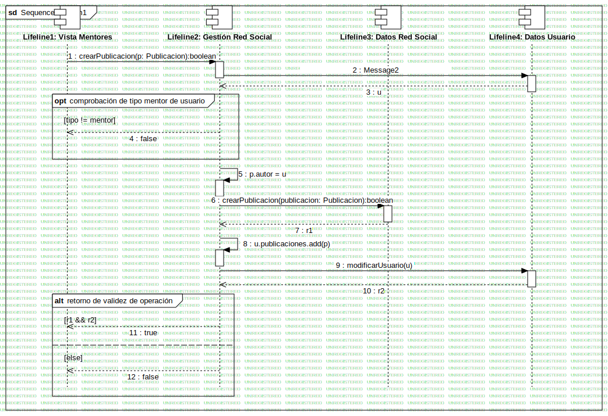

Interaction2
UMLInteraction
Grupo 06
::
Casos de uso
::
Carlos
::
Subir publicación
::
Interaction2
Description
none
Diagrams

SequenceDiagram1
Fragments
comprobación de tipo mentor de usuario
retorno de validez de operación
Participants
Lifeline1: Vista Mentores
Lifeline2: Gestión Red Social
Lifeline3: Datos Red Social
Lifeline4: Datos Usuario
Messages
Message1 (Lifeline1→Lifeline2)
Message2 (Lifeline2→Lifeline4)
u (Lifeline4→Lifeline2)
false (Lifeline2→Lifeline1)
u (Lifeline2→Lifeline2)
Message3 (Lifeline2→Lifeline3)
r1 (Lifeline3→Lifeline2)
u.publicaciones.add (Lifeline2→Lifeline2)
modificarUsuario (Lifeline2→Lifeline4)
r2 (Lifeline4→Lifeline2)
true (Lifeline2→Lifeline1)
false (Lifeline2→Lifeline1)
Properties
Name
Value
name
Interaction2
stereotype
null
visibility
public
isReentrant
true
Owned Elements
SequenceDiagram1